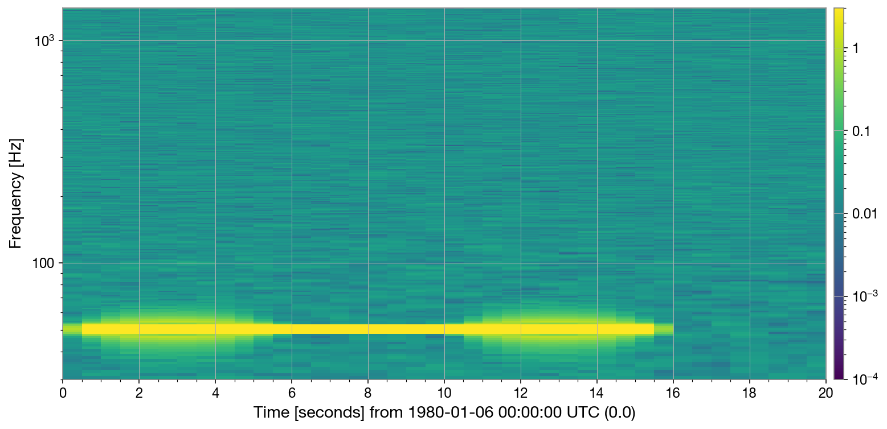

Wave Physics with LIGO data
Learn about sources from their signals
Do the math
Perfect pitch
Musical instruments (and many other sources of sound) use
resonance to amplify sound. Every object has a series of
natural resonant frequencies. Musical instruments are designed
so their resonant frequencies will correspond to a set of musical notes.
In most cases, the lowest resonant frequency will correspond to the round trip travel time for sound through the object. For a wind instrument (like a piccolo or a bassoon), this is the time for a sound wave to travel round trip from one end to the other. Finding this frequency is equivalent to finding a wave whose wavelength "fits" on the instrument - for example, the size of the instrument is half of a wavelength. So, longer wavelengths resonate with larger sources, which is why lower pitches often come from larger objects.
In most cases, the lowest resonant frequency will correspond to the round trip travel time for sound through the object. For a wind instrument (like a piccolo or a bassoon), this is the time for a sound wave to travel round trip from one end to the other. Finding this frequency is equivalent to finding a wave whose wavelength "fits" on the instrument - for example, the size of the instrument is half of a wavelength. So, longer wavelengths resonate with larger sources, which is why lower pitches often come from larger objects.
- You can model a piccolo as a hollow cyclinder, 30 cm long. How long is this in meters?
- The speed of sound in air is around 300 m/s. Calculate the round-trip travel time for sound down-and-back the length of the piccolo. (Hint: distance = rate X time)
- Use this time to estimate the lowest frequency a piccolo can play ( f = 1/T )
- Use an online tone generator to listen to this frequency. Does it sound like a note a piccolo could play?
- Repeat this for a bassoon, which has a path for sound about 2 m long.
- Play the bassoon's lowest pitch on the tone generator. Does it sound like a note a bassoon could make?
Reading time-frequency plots
Let's look at two ways to display the same signal.
The first figure shows a "time-domain" plot of a sound wave,
with amplitude on the y-axis and time on the x-axis. You can measure the
period of the wave by reading the time between peaks. You
can do this by dividing the time shown by how many peaks are shown.
- Calculate the period (T) for the signal shown at right.
- Calculate the frequncy (f) of this signal ( f = 1/T )
This figure shows a time-frequency plot of the data, known
as a spectrogram. You can see the signal as the bright, yellow band.
In plots like this, frequency is plotted on the y-axis, and time is plotted
on the x-axis. The color corresponds to the amplitude of each pixel.
- What is the frequency of the signal at right?
- Does this match the frequency in the time domain plot above? (Hint: yes)
- Does the frequency correspond to a larger instrument (like a bassoon) or a smaller instrument (like a piccolo)?
- If the frequency were one octave higher (twice the frequency), how would it appear in the spectrogram?
Spectrogram
Time-Frequency Plots for gravitational waves
Just like the frequency of a musical note can tell us about the size of the instrument, the frequency of a gravitational wave
signal can tell us about the size of binary black holes. Each cycle of a graviatational wave signals corresponds to
one half orbit of a binary black hole. You can see this in the video - a gravitational wave "crest" leaves the system each time
a black hole passes by. So, the period of the gravitational wave signal is always twice the period of the binary orbit:
2 * TGW = Torbit
The plots show the same simulated signal for a binary black merger, in the time domain and spectrogram plots. As the black holes get closer, they orbit faster, so the frequency goes up near the merger time (the black holes merger near time 1.7 s).
2 * TGW = Torbit
The plots show the same simulated signal for a binary black merger, in the time domain and spectrogram plots. As the black holes get closer, they orbit faster, so the frequency goes up near the merger time (the black holes merger near time 1.7 s).
- Using the plots at right to estimate the gravitational wave period near merger. [Hint: What's the highest frequency in the spectrogram?]
- Calcuate the orbital period. This is twice the gravitational wave period.
- Near merger, black holes always move really, really fast - around 108 m/s. This is around 1/3 the speed of light (!!) Use this velocity to estimate the orbital radius of the black holes [Hint: distance = rate X time].
- Is the radius you calculated closer to the size of a car, a city, a planet, or a star? Imagine an object this size, spinning around 100 times per second. What would it look like?
- The orbital radius near merger can be related to the black hole mass using the "ISCO" radius, rISCO = 6GM / c2. Assuming the orbital radius you calculated is the ISCO radius, estimate the mass of these black holes. G is Newton's constant, c is the speed of light.
- Divide your answer by the mass of our sun to estimate the mass in units of "solar masses"
- The masses used to genenate this signal are similar to parameters for GW150914 (well ... within a factor of 2). Take a look at the real GW150914 data. You can see the masses by clicking "show parameters". How do the spectrograms and masses of GW150914 compare with what you did here?